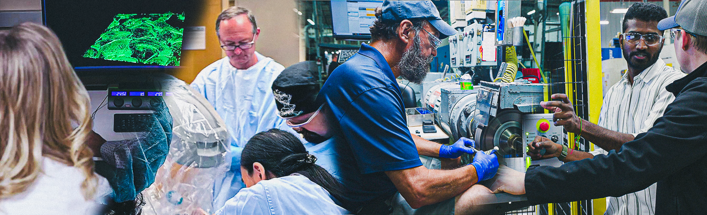
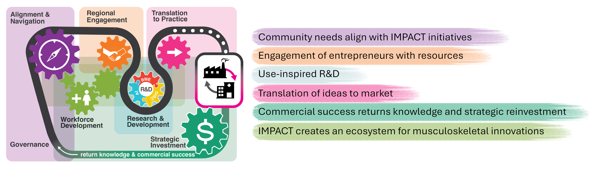
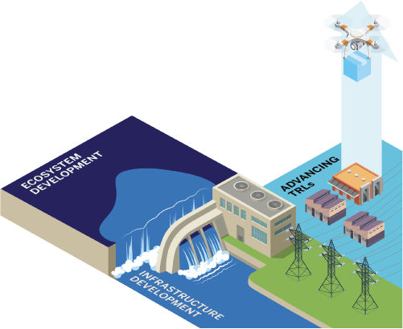
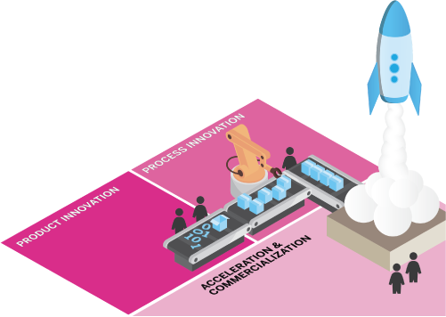
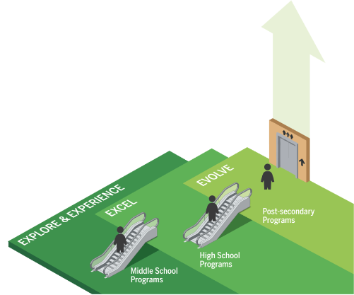

Technology domains
Plain-language priorities that connect AI, biosensors, digital twins, and hard-tech tools to musculoskeletal needs and applications.

Our Work
IMPACT connects Indiana's musculoskeletal technology priorities, regional strengths, research, translation, and workforce development into one coordinated ecosystem.
IMPACT focuses on musculoskeletal health challenges where Indiana can connect clinical insight, engineering, manufacturing, data science, and industry experience. The Engine's work begins with real needs and moves toward practical solutions through coordinated research, translation, and workforce activity.
Technology focus areas include artificial intelligence and machine learning applications, biosensor development, digital twin technology, and other hard-tech approaches that can support prevention, diagnosis, treatment, rehabilitation, manufacturing, and adoption in musculoskeletal health.
Plain-language priorities that connect AI, biosensors, digital twins, and hard-tech tools to musculoskeletal needs and applications.
A practical platform for connecting academic, clinical, industry, community, and public-sector partners across Indiana.
A shared pathway for moving from unmet needs and use-inspired ideas toward validation, implementation, and market relevance.
The Innovation Value Chain connects stakeholders and entrepreneurs with key drivers in the IMPACT ecosystem to lead change through innovation. Connecting the musculoskeletal community in north-central Indiana is the first step in understanding and responding to industry needs.
Through strategically placed Navigators, the ecosystem offers trusted intermediaries within communities to facilitate communication, align goals, connect stakeholders with key resources, streamline processes, and foster trust and collaboration. Navigators begin by engaging patients, providers, communities, and industry partners to identify unmet needs around specific MSK disorders, injuries, technologies, and processes.


IMPACT brings clinicians, engineers, researchers, industry partners, and communities together to identify problems worth solving and shape projects with a clearer path toward use.
Translation is the bridge between promising musculoskeletal ideas and practical use. IMPACT supports that bridge by aligning the right expertise, partners, infrastructure, and implementation pathways around each opportunity.


Workforce development connects students, workers, educators, employers, and community partners to the skills and experiences needed for musculoskeletal innovation, manufacturing, clinical translation, and ecosystem growth.